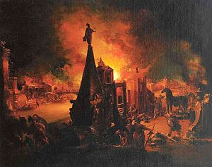

ლეგენდის თანახმად, წარმოებდა მცირე აზიაში ქალაქ ტროის წინააღმდეგ აქეველთა მიერ, ტროელი პარისის მიერ სპარტის მეფის მენელაოსის ცოლის უმშვენიერესი ელენეს მოტაცების გამო. ელენეს შეურაცხყოფილმა მეუღლემ, მენელაოსმა დახმარებისათვის მიმართა თავის ძმას, მიკენის მბრძანებელ აგამემნონს და სხვა ბერძენ მეფეებს. მათ შორის იყვნენ ბრძენი ნესტორი, ცბიერი ოდისევსი და უბადლო მეომარი აქილევსი. აქაველთა გაერთიანებულ ლაშქარს აგამემნონი სარდლობდა. ეს ომი ერთ-ერთი უმნიშვნელოვანესი მოვლენა იყო ბერძნულ მითოლოგიაში და აღწერილია ეპიკურ პოემათა ციკლში, რომელთა შორის ჩვენამდე მხოლოდ ორმა — ჰომეროსის ილიადა და ოდისეა — მოაღწია. ილიადაში აღწერილია ომის გვიანდელი პერიოდი, ხოლო ოდისეა აღწერს ერთ-ერთი ბერძენი ლიდერის ოდისევსის შინ დაბრუნების თავგადასავალს. ამ ისტორიის დანარჩენი ნაწილი, სხვადასხვა ვერსიაში, აღწერეს გვიანდელმა ბერძენმა პოეტებმა და რომაელმა პოეტმა ვირგილიუსმა მის ენეიდაში.
